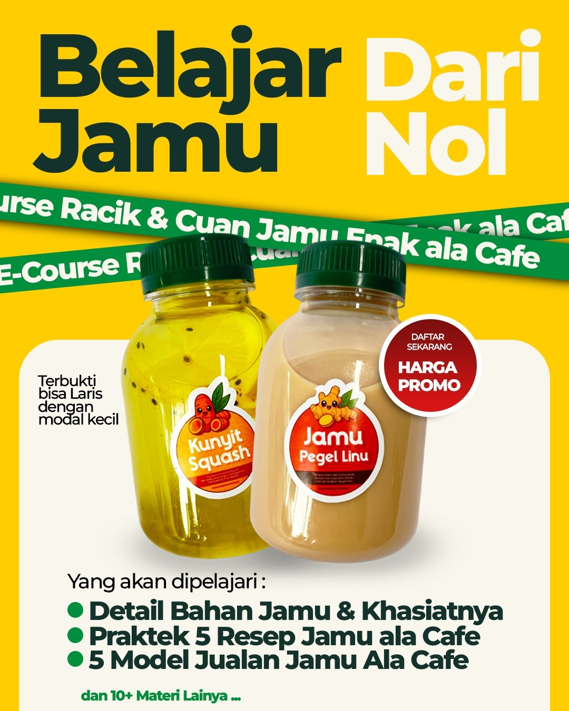
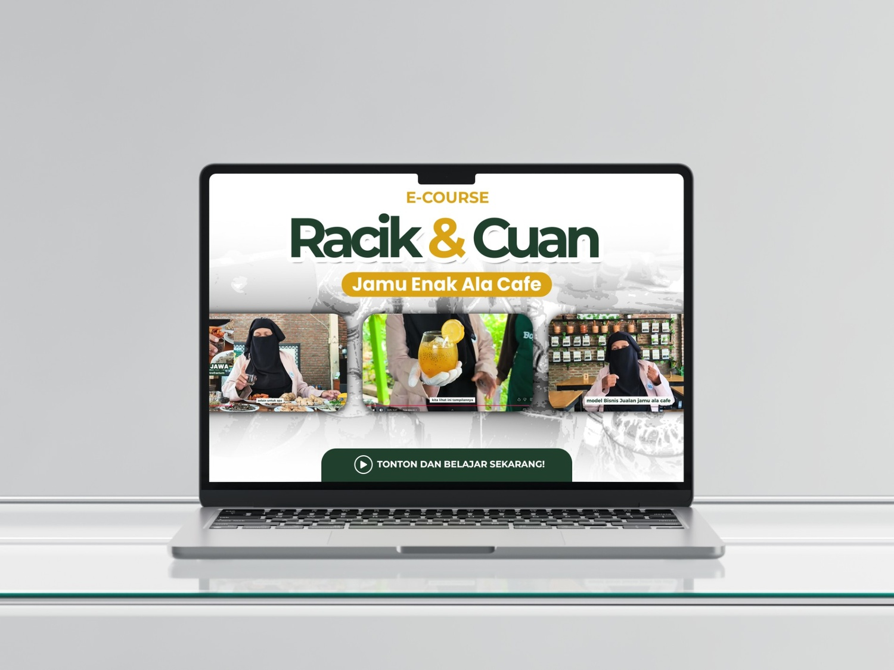
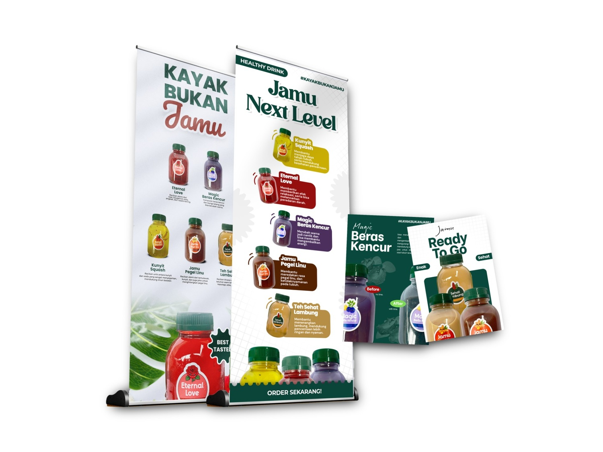
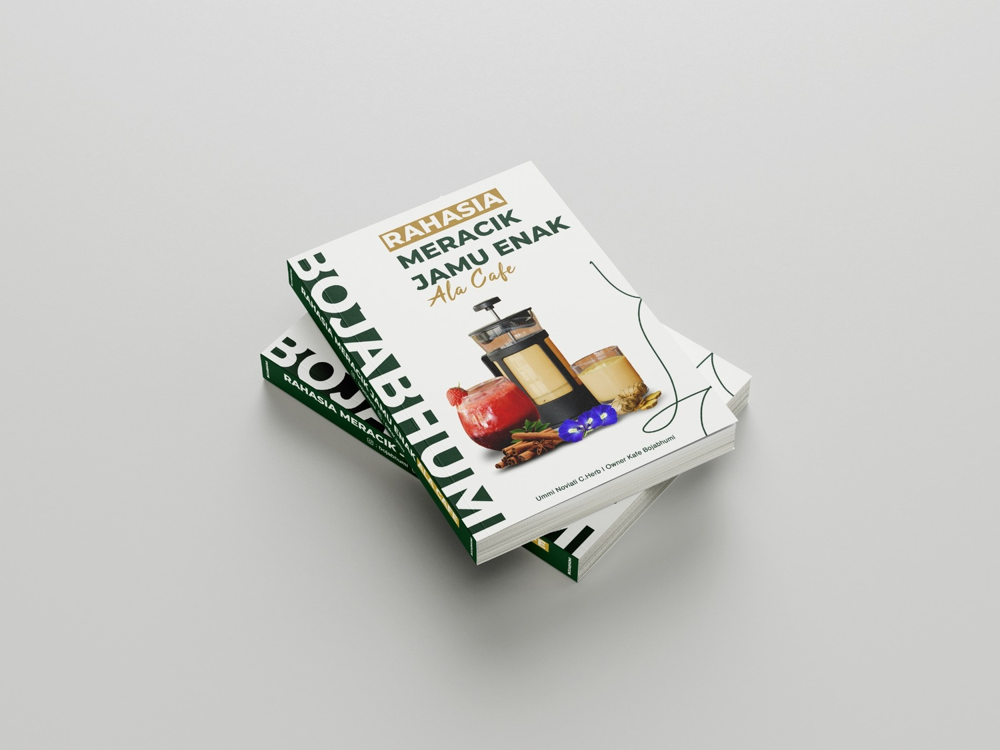

Pelatihan Meracik Jamu & Workshop Herbal Modern
Pelatihan herbal modern untuk mengenal, meracik, dan mengembangkan minuman herbal alami dengan pendekatan yang lebih praktis dan modern.


Belajar Herbal Modern
100+ Peserta
Jamu Journey Workshop Offline
Rahasia Meracik Jamu Enak Ala cafe
Program pelatihan herbal selama 2 hari untuk belajar meracik jamu, mengenal dan mengolah tanaman herbal, hingga memahami konsep bisnis cafe jamu modern.
01
Day 1
Praktik Meracik Herbal
Praktik meracik 30 resep jamu, pengenalan bahan herbal, dan workshop praktik langsung dengan mentor
02
Day 2
Eksplorasi taman herbal dan Workshop bisnis cafe jamu
Eksplorasi Boja Agro, praktik produksi di Boja Factory, dan workshop membuka cafe jamu yang relevan untuk market wellness modern.
Free bahan praktik
Free buku rahasia meracik jamu ala cafe
Free penginapan, konsumsi, dan transportasi
Sertifikat pelatihan
Voucher produk toko
Souvenir Pakar Jamu
Waiting List Workshop Offline
Rp 2.700.000
Rp 2.500.000
30 Slot Peserta
18 / 30 Slot Terisi
Program akan dimulai setelah kuota peserta terpenuhi. Pendaftaran akan ditutup otomatis ketika slot telah penuh.
Gabung Waiting List
Cerita Dari Peserta
Pengalaman Belajar Dari Peserta
Pengalaman belajar herbal modern langsung dari peserta Jamu Journey Experience.
Produk kami
Geser untuk melihat produk lainnya →
Produk Digital Pakar Jamu
Kumpulan e-course dan buku herbal modern untuk membantu memahami dunia jamu dengan lebih praktis dan modern.

Racik dan cuan dari jamu enak ala cafe
Order E-Course
Racik & Cuan dari minuman herbal cafe
Lihat Detail
Racik & Cuan dari modul herbal modern
Pesan Sekarang
Buku Resep Jamu Ala Cafe
Pesan Sekarang
FAQ Pakar Jamu
Pertanyaan Yang Sering Ditanyakan
Informasi seputar program Jamu Journey Experience dan sistem pelatihannya.
Bisa. Program ini dirancang ramah untuk pemula, dengan praktik bertahap dan pendampingan langsung selama workshop.
Pelatihan dimulai setelah kuota 30 peserta terpenuhi. Tim akan mengabari jadwal batch melalui WhatsApp.
Ya, peserta akan mendapat sertifikat pelatihan sebagai bukti telah mengikuti Jamu Journey Experience.
Sudah termasuk penginapan, konsumsi, dan transportasi selama rangkaian program sesuai ketentuan batch.
Peserta masuk daftar waiting list terlebih dahulu. Ketika slot terpenuhi, pendaftaran batch ditutup dan batch berikutnya akan dibuka kembali.
Ada. Peserta belajar meracik resep jamu, mengenal bahan herbal, eksplorasi Boja Agro, dan melihat proses produksi di Boja Factory.